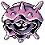

#091
Cloyster
WaterIce
When attacked, it launches its horns in quick volleys. Its innards have never been seen
Base stats Total 480
HP80
Attack95
Defense150
Speed70
Special85
Details
- Species
- Bivalve
- Height
- 4'11"
- Weight
- 292.0 lb
- Catch rate
- 60
- Base exp
- 203
- Growth
- Slow
Level-up moves
LevelMoveType
StartWithdrawWater
StartSupersonicNormal
StartClampWater
StartAurora BeamIce
Lv 7LeerNormal
Lv 12Water GunWater
Lv 17Ice ShardIce
Lv 25BubblebeamWater
Lv 34BarrierPsychic
Lv 36ClampWater
Lv 38Spike CannonIce
Lv 42Body SlamNormal
Lv 44Hydro PumpWater
Evolution
Evolves from Shellder
TM / HM
TM06 ToxicTM08 Body SlamTM09 Take DownTM10 Double-EdgeTM11 BubblebeamTM12 Water GunTM13 Ice BeamTM14 BlizzardTM15 Hyper BeamTM30 TeleportTM31 MimicTM32 Double TeamTM33 ReflectTM34 BideTM36 SelfdestructTM39 SwiftTM44 RestTM47 ExplosionTM49 Tri AttackTM50 SubstituteHM03 Surf